background族属性是我们经常会用到的css属性，用于控制背景样式，但其实background还有很多细节性的东西，让我们来了解一下吧。
首先我们先简单介绍一下background族属性都包含哪些：
| 属性 | 描述 | CSS |
|---|---|---|
| background-color | 设置背景颜色。 | 1 |
| background-position | 设置bg-image的位置。 |
1 |
| background-size | 设置bg-image的尺寸。 |
3 |
| background-repeat | 规定如何重复、是否重复bg-image。 |
1 |
| background-origin | 设置bg-image的定位基点。 |
3 |
| background-clip | 限制**整个背景**的绘制区域。 |
3 |
| background-attachment | 规定bg-image是否跟随页面滚动。 |
1 |
| background-image | 设置要使用的背景图像。 | 1 |
当然，background是一个复合属性，可以一次性配置以上介绍的所有属性。但要注意的是有一些配置项的单位相同，为了能让浏览器识别，在使用符合属性background同时配置bg-position和bg-size时，应遵循以下格式：
1 | background: positionX positionY / width height |
例如background: 0px 0px / 100px 100px，意为：背景定位于左上角(默认基于内边距盒子)，尺寸为宽高100px。
下面详细介绍各个background族属性👇
background-color
background-color设置背景颜色:
- 其值可为：英文单词、rgb、rgba、#开头的6位十六进制
- 层级低于
background-image
下例同时设置bg-color与bg-img，可发现：bg-img覆盖在bg-color之上。
1 | <style> |
background-position
background-position 用于设置bg-image的位置。默认值：0% 0%。
| 值 | 描述 |
|---|---|
top center bottom / left right center |
若只设置了一个关键词，那么第二个值将是”center”。 |
| x% y% | 第一个值是水平位置，第二个值是垂直位置。左上角是 0% 0%。右下角是 100% 100%。若只设置了一个值，另一个值将是 50%。 |
| xpos ypos | 第一个值是水平位置，第二个值是垂直位置。左上角是 0 0。单位是像素 (0px 0px) 或任何其他的 CSS 单位。若只设置了一个值，另一个值将是50%。 |
值得注意的是：
- 三种值类型可混合使用
- 可搭配
background-origin操控定位的基点，进行定位
background-size
background-size用于控制background-image的尺寸大小。
| 值 | 描述 |
|---|---|
width height |
分别设置背景图像的高度和宽度。第一个值设置宽度，第二个值设置高度。如果只设置一个值，则第二个值会被设置为 “auto”。单位可为px %，若为%则是相对于父级元素宽高。 |
| cover | 把背景图像扩展至足够大，以使背景图像完全覆盖背景区域。背景图像的某些部分也许无法显示在背景定位区域中。 |
| contain | 把图像图像扩展至最大尺寸，以使其宽度和高度完全适应内容区域。 |
如图示例：
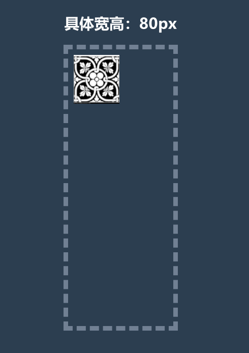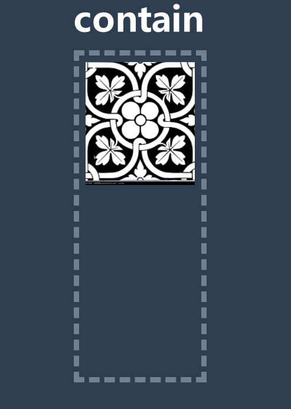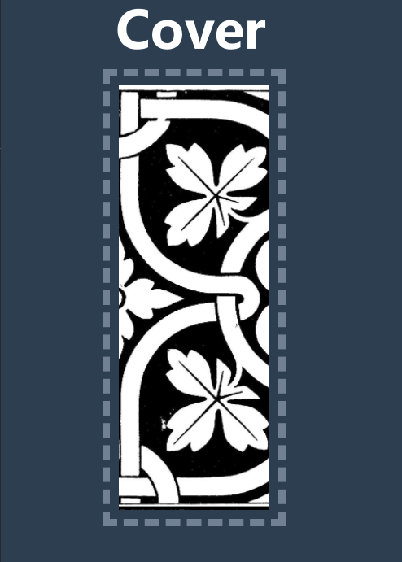
为了让其更加直观，应用了background-repeat: no-repeat,下面具体讲解👇
background-repeat
background-repeat规定如何重复、是否重复bg-image，其具体值如下：
| 值 | 描述 |
|---|---|
| repeat | 默认。背景图像将在垂直方向和水平方向重复。 |
| repeat-x | 背景图像将在水平方向重复。 |
| repeat-y | 背景图像将在垂直方向重复。 |
| no-repeat | 背景图像将仅显示一次。 |
| inherit | 规定应该从父元素继承 background-repeat 属性的设置。 |
默认情况下，即应用默认值repeat时：
- 当
bg-image的尺寸小于盒子尺寸时，将会自动显示出重复效果。 - 若
bg-image的尺寸大于盒子尺寸时，通过bg-position，也可观察出重复效果。- 例如盒子宽高为200px，背景图像宽高400px，设置
bg-position: 1200px 1200px,虽然定位效果已经远远超出了背景图的宽高，但由于默认是repeat模式，背景图依然能够显示。
- 例如盒子宽高为200px，背景图像宽高400px，设置
background-origin
可通过该属性，改变background-position 的定位基点，具体来说其值如下：
| 值 | 描述 |
|---|---|
| padding-box | 默认。背景图像相对于内边距框来定位。 |
| border-box | 背景图像相对于边框盒来定位。 |
| content-box | 背景图像相对于内容框来定位。 |
示例：
基础代码
1 | .box { |
background-origin: padding-box
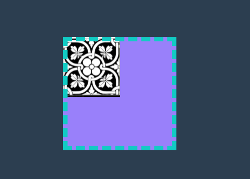background-origin: border-box
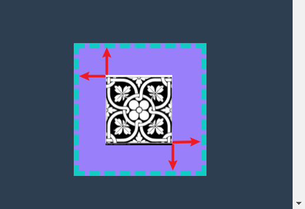background-origin: content-box
background-clip
background-clip: 限制**整个背景**的绘制区域，其值具体来说有以下几种：
| 值 | 描述 |
|---|---|
| border-box | （默认值）整个背景被裁剪到边框盒。 |
| padding-box | 整个背景被裁剪到内边距框。 |
| content-box | 整个背景被裁剪到内容框。 |
| text | 整个背景被裁剪到文字区域的上方。 |
值得注意的是：
background-origin是对bg-image的限制，而不会影响bg-color。- 但
background-clip会限制**整个背景**的绘制区域，也就是说设置了该属性，将会影响所有的背景元素，包括bg-color与bg-image
示例：
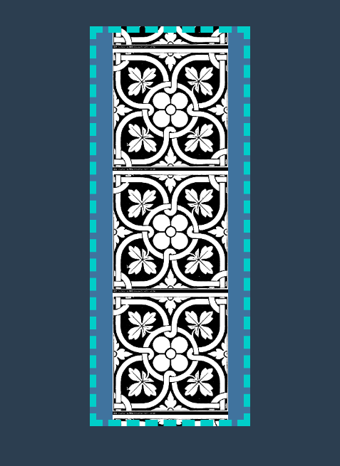1 | .box { |
可以看到，不仅有背景图片的显示，还有背景颜色，因为background-origin只是对bg-image的定位约束，所以看到背景图片两端有空隙，从而显示出bg-color。
如果将注释代码取消，也就是设置background-clip: content-box，则是对整个背景区域的约束，bg-color也就不再显示（被bg-image覆盖）。
background-clip: text
这是个有意思的属性值，可以用它将背景裁剪到文字上方，且只在文字展示，其余部分不会展示背景，可以用它完成下例特效：
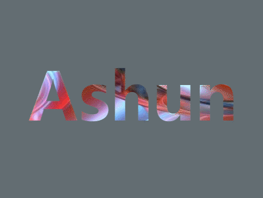关键代码：
1 | color: transparent; |
background-attachment
background-attachment用于设置background-image的附件模式，即bg-image是否随整个页面滚动而滚动，而不是相对自身元素。
其属性值可以为：
| 值 | 描述 |
|---|---|
| scroll | 默认值。背景图像会随着页面其余部分的滚动而移动。 |
| fixed | 当页面的其余部分滚动时，背景图像不会移动。 |
| inherit | 规定应该从父元素继承 background-attachment 属性的设置。 |
下例左图设置
background-attachment: fixed的效果，可发现，bg-image不随页面滚动而滚动，相当于：相对body绝对定位。右图为默认值
scroll，也就是我们常见的效果，bg-image随页面滚动而滚动，相当于：相对body进行fixed定位。
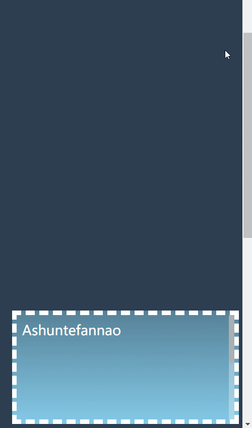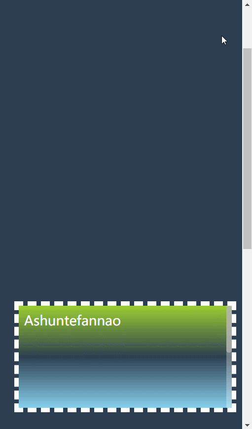
background-image
上文介绍的很多书性，都是控制background-image的，这个主角终于登场了，实际开发时，我们可能只会使用其基本功能(设置背景图片)，但其实该属性还能完成渐变色效果。
其属性值可为以下几种：
| 值 | 描述 |
|---|---|
| none | 默认值。不显示背景图像。 |
| url(“imagePath”) | 指向图像的路径。 |
| linear-gradient() | 创建一个线性渐变的 “图像”，(默认方向:自上而下) |
| radial-gradient() | 创建径向渐变 “图像”。 (默认方向:中心到边缘) |
| repeating-linear-gradient() | 创建重复的线性渐变 “图像”。 |
| repeating-radial-gradient() | 创建重复的径向渐变 “图像”。 |
值得注意的是：
background-image可以设置多个值，且以上属性值可混合、重复配置，配置的背景图像都可展示出来，层级高低随配置的顺序依次递减，也就是说，距离用户最近的那一层是background-image的第一个属性值。
若配置了多个属性值，且第一层图像没有透明度，则下层的图像将不能展示，这个很好理解，相当于第一层图像挡住了后面层级的图像。
我们可利用这个特性，展示出不同有意思的效果：
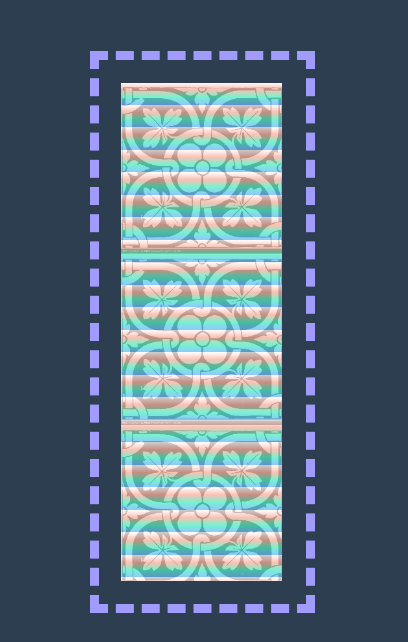1 | .box { |
再添加一层：
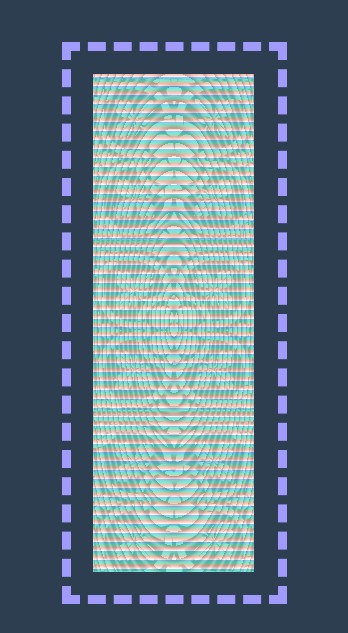1 | background-image: repeating-linear-gradient( //第一层图像 |
下面我们详细介绍各个属性👇
url(“imagePath”)
通过该属性可设置具体的背景图片，只需要传入图片的路径即可。
- 设置多层图片时，要注意图片是否具有透明度，否则会覆盖下层图片
linear-gradient()
创建一个线性渐变的 “图像” (默认方向:自上而下)，通过传入各个颜色，并可设置每个颜色的终止位置，实现渐变效果。
其语法为：
1 | background-image: linear-gradient(direction, color-stop1, color-stop2, ...); |
direction可取值：
to direction- 以
to开头，后面紧接渐变方向 - 渐变方向为:
top、bottom、left、right。且可两两组合进行倾斜方向的渐变 - 例如：
to bottom(默认值)、to top right（自左下至右上）
- 以
deg- 设置具体渐变的角度，例如：
45deg
- 设置具体渐变的角度，例如：
color-stop可取值：
该参数分为两部分：颜色 和 终止位置。终止位置：该颜色结束的位置，也是开始渐变下个颜色的位置。
- 颜色可取值：英文单词、rgb、rgba、#开头的六位16进制。
- 终止位置可取值
- 可具体到像素
px - 可设置百分比
%，相对于盒子的尺寸 - 当不设置终止位置时，将自动均分各色块
- 可具体到像素
例如：
渐变方向为自左向右，起使颜色为pink,末尾颜色为red且终止于盒子末尾。
1 | background-image: linear-gradient(to right, pink, red 100%); |
再复杂的线性渐变情况，也符合上面所讲的逻辑，只需简单分析即可。
radial-gradient()
创建径向渐变 “图像”。 (默认方向:中心到边缘)，其语法如下：
1 | background-image: radial-gradient(shape size at position, start-color, ..., last-color); |
具体参数：
| 顺序 | 值 | 描述 |
|---|---|---|
| 1 | shape | 设置径向渐变的形状 |
| 1 | size | 定义渐变的半径长度 |
| 1 | position | 定义渐变的位置 |
| 2~n | start-color, …, last-color | 用于指定渐变的起止颜色。用法同linear-gradient() |
这里我们主要介绍第一个参数，第一个参数包含三部分：shape 形状，size大小，position位置
shape
- ellipse (
默认): 指定椭圆形的径向渐变 - circle ：指定圆形的径向渐变
size
- farthest-corner (
默认) : 指定径向渐变的半径长度为从圆心到离圆心最远的角 - closest-corner ： 指定径向渐变的半径长度为从圆心到离圆心
最近的角 - farthest-side ：指定径向渐变的半径长度为从圆心到离圆心
最远的边 - closest-side ：指定径向渐变的半径长度为从圆心到离圆心
最近的边
position
- 以
at开头，后面紧接渐变位置 - 渐变位置取值
- center（
默认）：设置中间为径向渐变圆心的纵坐标值。 - 还可设置为：
top、bottom、left、right
- center（
示例：
渐变形状为圆形，渐变半径长度为：圆心到离圆心最近的角，末尾颜色为white且终止于盒子宽度的250%。

1 | .box { |
径向渐变相对较为复杂，但也都符合上面所讲的逻辑，只需分析参数即可。
重复设置渐变
可重复设置渐变，对应两个属性值：repeating-linear-gradient()与repeating-radial-gradient()，分别重复设置线性、径向渐变效果。
其参数用法与单独设置渐变效果相同，但若要出现重复渐变的效果，必须要：设置末尾元素的结束位置< 盒子尺寸。
这个很好理解，因为渐变末尾颜色的结束位置若大于等于盒子尺寸，则整个渐变效果会覆盖整个盒子，也就不会出现重复渐变的效果。
具体案例可以参考上文（background-image起始处）。
最后
background看似很简单，其实藏有很多的细节，可以结合之前所学知识多元化思考，就可能创造出非常炫酷的效果
本文到此结束，希望对你有所帮助，我是 Ashun ，在校大学生，立志成为资深前端工程师，欢迎大家一起交流、学习。后续更新更多文章，请持续关注哦~
原创文章，文笔有限，才疏学浅，文中若有不正之处，速速告知。